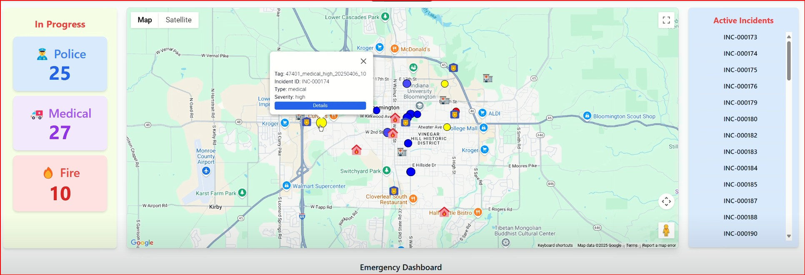
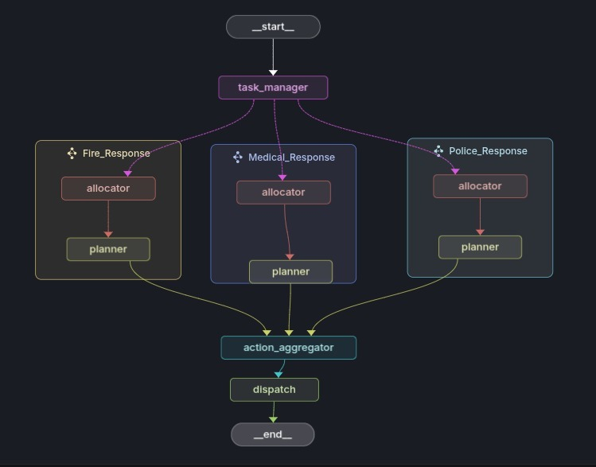
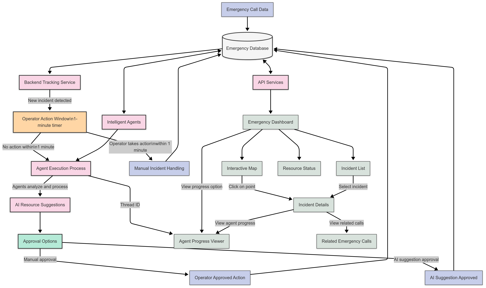
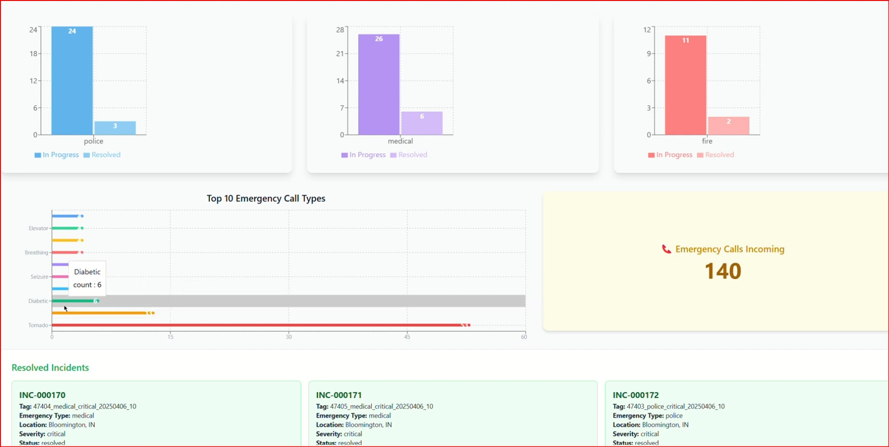
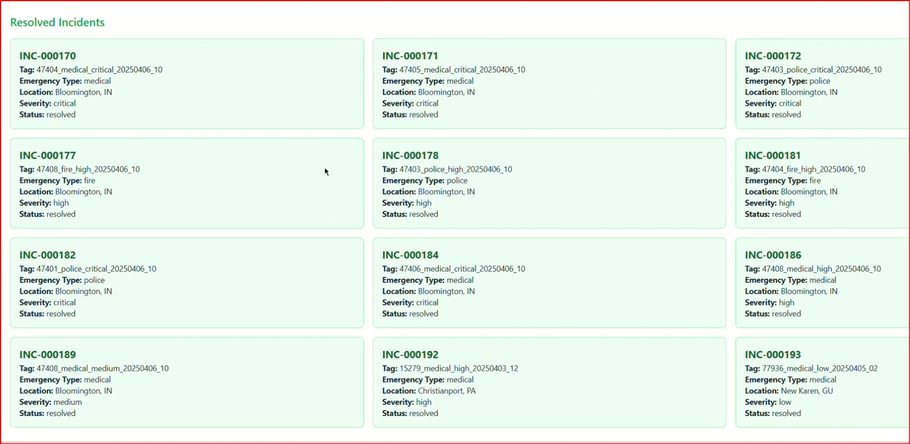
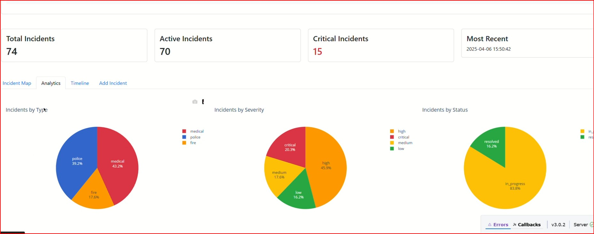

Emergency Response Multi-Agent System: Revolutionizing 911 Operations During Tornado Disasters
🚨 Hackathon Project: This emergency response system was developed during a hackathon at Indiana University, simulating tornado disaster scenarios in Bloomington. The project demonstrates how AI-powered multi-agent systems can revolutionize emergency response operations.
Project Overview
During disasters like tornadoes, 911 call centers become overwhelmed, leading to delayed responses. Our AI-powered multi-agent system addresses this by automating emergency call analysis, coordinating Police/Fire/Medical resources, and providing real-time dispatch optimization for Bloomington, Indiana.
- AI Call Processing: Automatically extracts emergency type, severity, location, and resource needs from 911 calls.
- Multi-Agent Coordination: Police, Fire, and Medical AI agents collaborate for optimal resource allocation.
- Real-Time Dashboard: Interactive map with color-coded incidents and resource tracking.
- Auto-Dispatch: 60-second operator window, then automatic resource deployment.
- Smart Consolidation: Groups similar incidents within 100m radius to prevent duplication.

Operator control interface for emergency management and multi-agent coordination

Multi-Agent System Architecture showing the orchestrator and specialized response agents

An Overview of the end to end workflow

Real-time emergency response dashboard showing active incidents and resource allocation

Completed emergency responses showing system effectiveness and outcome tracking
Problem Statement
Traditional 911 systems fail during disasters due to:
- Call Overload: 10-50× normal call volumes overwhelm operators.
- Resource Coordination: Complex multi-agency coordination exceeds human capacity under stress.
- Information Processing: Extracting critical data from panicked calls takes too long.
- Geographic Optimization: Finding nearest resources while considering traffic/weather is complex.
- Priority Assessment: Inconsistent severity evaluation across operators.
Impact: Reducing response times by 1 minute improves survival rates by 7-10% for cardiac arrests and 15-20% for trauma cases.
System Architecture
Multi-layered architecture for emergency response coordination:
- AI Processing: GPT-4o-mini analyzes 911 calls and extracts metadata.
- LangGraph Orchestrator: Coordinates workflow between specialized agents.
- Response Agents: Police, Fire, Medical agents generate action plans.
- Geospatial System: MongoDB proximity analysis for optimal resource dispatch.
- React Dashboard: Real-time visualization with Google Maps integration.
- API Layer: Node.js/Express RESTful endpoints for system coordination.
Multi-Agent Framework
LangGraph-based framework enabling coordinated AI decision-making across emergency services:
- Orchestrator Agent: Central coordinator managing workflow and resource allocation.
- Specialized Agents: Police, Fire, Medical domain experts with specific knowledge.
- Shared State: Common incident data, location, and resource availability.
- Parallel Processing: Simultaneous analysis from multiple perspectives.
- Dynamic Workflow: Adapts based on incident type (fire+injuries = Fire+Medical).
- Persistent Storage: MongoDB checkpoint integration for recovery.
Data Processing Pipeline
Transforms raw 911 calls into actionable intelligence through AI analysis and event consolidation.
Emergency Call Generation
Realistic tornado simulation data for testing:
- 100+ Scenarios: Medical, fire, and police emergencies with natural language variation.
- Geographic Accuracy: Real Bloomington addresses using Faker + Nominatim geocoding.
- Realistic Speech: Emotional states, filler words, ambient details.
- Temporal Patterns: Triangular distribution simulating disaster progression.
AI Analysis
GPT-4o-mini extracts critical metadata from unstructured call descriptions:
- Classification: Emergency type (police/medical/fire), severity (low/medium/high/critical).
- Extraction: People affected, location, required resources, keywords.
- Validation: Edge case handling (e.g., "accident" → "medical").
Event Consolidation
Intelligent grouping prevents resource duplication:
- Geographic: 100m radius clustering using geospatial analysis.
- Temporal: 60-minute windows for related incidents.
- Priority Escalation: 5+ calls = medium, 10+ calls = high priority.
- History Tracking: Preserves all individual call descriptions.
Orchestrator Agent
Central coordinator managing multi-agent workflow and resource allocation.
Task Management
- Service Selection: GPT-4o-mini determines required services (Police/Medical/Fire/combinations).
- Dynamic Routing: LangGraph Send mechanism routes tasks to appropriate agents.
- Priority Processing: Higher priority incidents get immediate attention.
- Multi-Service Coordination: Complex incidents activate multiple agents simultaneously.
Resource Allocation
- Geospatial Optimization: Haversine distance calculations for closest available resources.
- Cross-Service Coordination: Prevents resource conflicts between agencies.
- Capacity Management: Tracks unit availability across all services.
- Real-Time Updates: Live database connections for current availability.
Dispatch Coordination
- Plan Synthesis: Combines Police/Fire/Medical recommendations into unified dispatch.
- Standardized Format: Scan-friendly instructions for operators.
- Auto-Integration: Updates incident status and provides tracking URLs.
- Quality Validation: Ensures all required services are included.
Specialized Response Agents
Domain-specific AI agents for Police, Fire, and Medical emergency response planning.
Police Agent
- Threat Assessment: Minor/Moderate/Major/Extreme severity classification.
- Unit Deployment: Patrol Cars (1-8+), SWAT, K9, Negotiation, Traffic Control, Air Support.
- Tactical Planning: Scenario-specific requirements (perimeter, forensics, pursuits).
- Resource Optimization: Real-time availability and response time constraints.
Fire Department Agent
- Fire Classification: Minor/Moderate/Major/Extreme based on scope and hazards.
- Equipment Deployment: Fire Trucks (1-6+), Ladder Trucks, Hazmat, Water Tenders, Command Units.
- Scenario Adaptation: High-rise (ladder trucks), wildfire (water tenders), industrial (hazmat).
- Safety Protocols: Appropriate equipment for hazardous environments.
Medical Response Agent
- Medical Triage: Minor/Moderate/Major/Extreme patient classification.
- Resource Allocation: Ambulances (1-8+), ALS Units, Medical Helicopters, Specialized Teams.
- Clinical Priorities: Cardiac arrests (ALS), trauma (specialized teams), mass casualties (triage).
- Transport Coordination: Appropriate facilities based on injury severity and capacity.
Frontend Dashboard
The React-based frontend provides emergency operators with a real-time interface for monitoring disaster response operations in Bloomington.
- Interactive Map: Google Maps integration with real-time incident markers and emergency resource locations.
- Live Updates: Dashboard refreshes every 3 seconds with color-coded emergency markers by type and severity.
- Analytics Charts: Emergency call volumes, incident patterns, and resource utilization using Recharts.
- Incident Management: Click markers for detailed information and consolidated event histories.
- Resource Tracking: Real-time availability of hospitals, fire departments, and police units.
- Responsive Design: Mobile-friendly interface for field operations.
Key Components:
- FetchMapPoints: Polls backend API for real-time incident updates.
- IncidentMarker: Custom map markers with severity indicators and emergency type icons.
- Dashboard: Analytics charts for Police, Fire, and Medical incidents.
- EmergencyBoard: Top 10 emergency call types with live counts.
- SideBoard: Active incident list with direct links to detailed pages.
Primary emergency response dashboard showing real-time incident tracking and resource allocation

Advanced analytics dashboard displaying emergency call patterns and response metrics
Operator control interface for managing emergency incidents and coordinating multi-agent responses
Resolved incidents tracking showing completed emergency responses and outcome analysis
Database Architecture
MongoDB-based architecture with geospatial capabilities for emergency data management.
- Geospatial Queries: 2dsphere indexes for proximity searches and nearest resource identification.
- Dual Collections: Separate collections for individual calls and consolidated events.
- Real-Time Updates: Change streams for live dashboard synchronization.
- Flexible Schema: Accommodates varying emergency call formats.
Key Features:
- Event Consolidation: Groups related incidents using 100m radius and 60-minute windows.
- Priority Escalation: Auto-escalates priority based on call volume (5+ calls = medium, 10+ = high).
- LangGraph Integration: Persistent state store for multi-agent workflows.
- RESTful API: Node.js/Express endpoints for frontend and agent coordination.
Tornado Simulation Scenario
Realistic tornado disaster simulation for Bloomington, Indiana testing system capabilities.
- Geographic Accuracy: Bloomington coordinates (39.1653°N, 86.5264°W) with university, downtown, and residential areas.
- Disaster Progression: Temporal patterns from weather reports → structural damage → injuries → recovery.
- Cascading Effects: Power failures causing fires, structural collapses, debris injuries, communication damage.
- Resource Constraints: Limited ambulance/fire/police availability during widespread emergencies.
- Weather Impact: Storms, winds, debris affecting response times and accessibility.
Historical Basis: Inspired by 2012 Henryville tornado and 1965 Palm Sunday outbreak response lessons.
Emergency Scenarios:
- Structural: Building collapses, tree falls, wall failures.
- Fire: Lightning strikes, power line failures, chemical hazards.
- Medical: Trauma injuries, glass cuts, falls during evacuation.
- Public Safety: Lost children, trapped individuals, flooding.
Bloomington-Specific Features:
- IU Campus: Student population, dormitories, university emergency protocols.
- Infrastructure: Limestone quarries, campus buildings, downtown district.
- Resources: IU Health Hospital, Bloomington Fire Department, Monroe County Sheriff.
- Communication: Severe weather failure simulation and coordination resilience.
Technical Implementation
Built with modern AI and web technologies for real-time emergency response.
Tech Stack:
- AI: LangChain/LangGraph for multi-agent coordination, GPT-4o-mini for call analysis.
- Backend: Python with Flask API for processing and coordination.
- Database: MongoDB with geospatial indexing for proximity searches.
- Frontend: React.js + Google Maps + Tailwind CSS + Recharts.
- API: Node.js/Express RESTful endpoints.
Key Libraries:
# Backend
langchain, langgraph, openai, pymongo, flask
# Frontend
react, @react-google-maps/api, axios, recharts, tailwindcss
# Database
mongoose, express
Architecture:
- Parallel Processing: Python multiprocessing for high-volume call handling.
- Real-Time Updates: WebSocket + HTTP polling for live dashboard.
- Error Handling: Retry mechanisms and graceful degradation.
- Scalability: Modular design with horizontal scaling support.
- Security: CORS, input validation, secure data handling.
Future Enhancements
Next steps for real-world deployment and expanded capabilities:
- 911 System Integration: Connect with existing CAD systems and emergency service databases.
- Advanced ML Models: Specialized models for incident prediction and resource optimization.
- Mobile Apps: Field applications for first responders and commanders.
- Predictive Analytics: Weather-based forecasting and incident pattern recognition.
- Multi-Jurisdiction: Regional coordination across county and state boundaries.
- Voice Processing: Direct 911 audio analysis with speech-to-text.
- IoT Integration: Smart city sensors, cameras, and building systems.
- Training Modules: Simulation-based operator and responder training.
Conclusion
AI-powered multi-agent system successfully addresses 911 dispatch challenges during tornado disasters in Bloomington, Indiana.
Key Results:
- Automated Analysis: AI extracts critical info from emergency calls, reducing operator workload.
- Multi-Agent Coordination: Police, Fire, Medical agents work together preventing resource conflicts.
- Real-Time Dashboard: Interactive map provides immediate situational awareness.
- Scalable Design: Modular architecture supports larger deployments and integrations.
- Proven Technologies: Built with LangGraph, React, MongoDB for reliable deployment.
The system augments human decision-making without replacing critical human judgment. Operators can focus on complex decisions while AI handles routine analysis and coordination.
Impact:
Hackathon project demonstrates rapid AI application to real-world problems. Successful tornado simulation shows potential for actual emergency deployment where minutes saved can prevent casualties.
Team Contributions
Dilip Nikhil Francies:
- LangChain agent design for emergency call triage, classification, and resource allocation
- MongoDB database architecture and geospatial indexing design
- End-to-end system architecture design
- Analytics dashboard design and data visualization
- Emergency call data generator with realistic scenarios
- Smart event tagging and consolidation algorithms
- Tornado simulation scenario design for Bloomington
- Project presentation and technical documentation
- Haversine distance calculations for resource optimization
- Priority escalation system and event consolidation logic
Nischal BK:
- Multi-agent orchestrator design using LangGraph
- Agent coordination and workflow management
- Video demonstration
Prinston Rebello & Sathya NC:
- React frontend development and user interface design
- Google Maps integration and interactive mapping
- RESTful API design and backend integration
- Real-time dashboard components and data visualization
Hackathon Project: Developed at Indiana University hackathon showcasing collaborative innovation in emergency response technology.